This game introduces many new concepts. But don't worry, we'll experiment with these programming concepts in the interactive shell first. Once you understand these concepts, it will be much easier to understand the game in this chapter: Hangman.
In case you don't know, Hangman is a game two people play with paper and pencil. One person thinks of a word, and then draws blanks for each letter in the secret word. The other person guesses letters that might be in the word. If they guess correctly, the first person writes the letter into the blank. If they guess wrong, the first person draws another body part of the hangman. If the second person can guess all the letters in the word before the hangman has completely been drawn, they win.
This code is about four times larger than our Dragon World game! But don't worry. Half of the lines of code aren't really code at all, but are strings that use keyboard characters to draw pictures. This type of graphics is called ASCII art (pronounced "ask-ee"), because keyboard characters (such as letters, numbers, and also all the other signs on the keyboard) are called ASCII characters. ASCII stands for American Standard Code for Information Interchange. Here are some cats (with the artist's initials) done in ASCII art:
( ( ) ) / / / / ,-' `-. ,' \ _ , _,-' ( ) )`--/,) `. ( / \ ( ) / 6),6> ) \ )_/ / __(Y:. _,' ) /(((_/ (((_^---'`._,-' / ``` hjw ''' ((( _.-' ''' |
/a a \ _ =\ Y =/-~~~~~~-,________/ ) '^--' _________/ \ / || |---'\ \ jgs (_(__| ((__| |
).. \ \Y_, '-. ) '. | \/ \ \\ |\_ |_ jgs ((_/(__/_,'. (,----' |
So this program's code is only about twice the size of Dragon World (if you don't count the pictures). Go ahead and type in this code into the file editor, and save the file as hangman.py. Then run the program by pressing F5. It might be a good idea to save the file every once in a while as you type it, so that if something happens to your computer or IDLE crashes, you won't lose everything you have typed.
H A N G M A N
+------+
| |
| |
|
|
|
|
|
|
|
|
==============
Missed letters:
_ _ _ _ _
Guess a letter.
e
+------+
| |
| |
|
|
|
|
|
|
|
|
==============
Missed letters:
_ _ _ e _
Guess a letter.
a
+------+
| |
| |
O |
|
|
|
|
|
|
|
==============
Missed letters: a
_ _ _ e _
Guess a letter.
u
+------+
| |
| |
O |
| |
| |
| |
|
|
==============
Missed letters: a u
_ _ _ e _
Guess a letter.
r
+------+
| |
| |
O |
| |
| |
| |
|
|
==============
Missed letters: a u
_ _ _ e r
Guess a letter.
i
+------+
| |
| |
O |
/| |
/ | |
| |
|
|
|
|
==============
Missed letters: a u i
_ _ _ e r
Guess a letter.
o
+------+
| |
| |
O |
/| |
/ | |
| |
|
|
|
|
==============
Missed letters: a u i
o _ _ e r
Guess a letter.
t
Yes! The secret word is "otter"! You have won!
Do you want to play again? (yes or no)
no
hangman.py
- import random
- HANGMANPICS = ['''
- +------+
- | |
- | |
- |
- |
- |
- |
- |
- |
- |
- |
- ==============''', '''
- +------+
- | |
- | |
- O |
- |
- |
- |
- |
- |
- |
- |
- ==============''', '''
- +------+
- | |
- | |
- O |
- | |
- | |
- | |
- |
- |
- ==============''', '''
- +------+
- | |
- | |
- O |
- /| |
- / | |
- | |
- |
- |
- |
- |
- ==============''', '''
- +------+
- | |
- | |
- O |
- /|\ |
- / | \ |
- | |
- |
- |
- |
- |
- ==============''', '''
- +------+
- | |
- | |
- O |
- /|\ |
- / | \ |
- | |
- / |
- / |
- |
- |
- ==============''', '''
- +------+
- | |
- | |
- O |
- /|\ |
- / | \ |
- | |
- / \ |
- / \ |
- |
- |
- ==============''']
- words = 'ant baboon badger bat bear beaver beetle bird camel cat clam cobra cougar coyote crab crane crow deer dog donkey duck eagle ferret fish fox frog goat goose hawk iguana jackal koala leech lemur lion lizard llama mite mole monkey moose moth mouse mule newt otter owl oyster panda parrot pigeon python quail rabbit ram rat raven rhino salmon seal shark sheep skunk sloth slug snail snake spider squid stork swan tick tiger toad trout turkey turtle wasp weasel whale wolf wombat worm zebra'.split()
- def getRandomWord(wordList):
- # This function returns a random string from the passed list of strings.
- wordIndex = random.randint(0, len(wordList) - 1)
- return wordList[wordIndex]
- def displayBoard(HANGMANPICS, missedLetters, correctLetters, secretWord):
- print HANGMANPICS[len(missedLetters)]
- print 'Missed letters:',
- for letter in missedLetters:
- print letter,
- blanks = '_' * len(secretWord)
- for i in range(len(secretWord)): # replace blanks with correctly guessed letters
- if secretWord[i] in correctLetters:
- blanks = blanks[:i] + secretWord[i] + blanks[i+1:]
- for letter in blanks: # show the secret word with spaces in between each letter
- print letter,
- def getGuess(alreadyGuessed):
- # Returns the letter the player entered. This function makes sure the player entered a single letter, and not something else.
- while True:
- print 'Guess a letter.'
- guess = raw_input()
- guess = guess.lower()
- if len(guess) != 1:
- print 'Please enter a single letter.'
- elif guess in alreadyGuessed:
- print 'You have already guessed that letter. Choose again.'
- elif guess not in 'abcdefghijklmnopqrstuvwxyz':
- print 'Please enter a LETTER.'
- else:
- return guess
- def playAgain():
- # This function returns True if the player wants to play again, otherwise it returns False.
- print 'Do you want to play again? (yes or no)'
- return raw_input().lower().startswith('y')
- print 'H A N G M A N'
- missedLetters = ''
- correctLetters = ''
- secretWord = getRandomWord(words)
- gameIsDone = False
- while True:
- displayBoard(HANGMANPICS, missedLetters, correctLetters, secretWord)
- # Let the player type in a letter.
- guess = getGuess(missedLetters + correctLetters)
- if guess in secretWord:
- correctLetters = correctLetters + guess
- # Check if the player has won
- foundAllLetters = True
- for i in range(len(secretWord)):
- if secretWord[i] not in correctLetters:
- foundAllLetters = False
- break
- if foundAllLetters:
- print 'Yes! The secret word is "' + secretWord + '"! You have won!'
- gameIsDone = True
- else:
- missedLetters = missedLetters + guess
- # Check if player has guessed too many times and lost
- if len(missedLetters) == len(HANGMANPICS) - 1:
- displayBoard(HANGMANPICS, missedLetters, correctLetters, secretWord)
- print 'You have run out of guesses!\nAfter ' + str(len(missedLetters)) + ' missed guesses and ' + str(len(correctLetters)) + ' correct guesses, the word was "' + secretWord + '"'
- gameIsDone = True
- # Ask the player if they want to play again (but only if the game is done).
- if gameIsDone:
- if playAgain():
- missedLetters = ''
- correctLetters = ''
- gameIsDone = False
- secretWord = getRandomWord(words)
- else:
- break
After typing in the source code (don't forget to save!) you can run this game by pressing F5. If any errors come up, be sure you typed the source code in exactly as it appears here. Remember that the indentation is important, and that lines will have zero, four, eight, or even twelve spaces in front of them.
This game is a bit more complicated, so it will help if we take a moment to think about how we will put the program together. We will create a flow chart (like the flow chart at the end of the Dragon Realm chapter) to think about what this program will do. Of course, we don't have to write out a flow chart. We could just start writing code. But many times when we are writing code, we will think of new things to add or other events in the program that we didn't think of. We may have to end up changing the code we have already written, or deleting a lot of the code. That would be a waste of effort. We can save a lot of time if we think about the program before writing it.
This flow chart is provided as an example for what flow charts look like and how to make them. Because you only have to copy the source code from this book, you don't need to draw a flow chart before writing code. But when you make your own games, a flow chart can be very handy.
This flow chart will also help you learn how to design games yourself, instead of just copying the source code from this book. Your flow chart doesn't have to look exactly like this one. You may have extra boxes or fewer boxes. But as long as it you understand the flow chart you made, it will be helpful when you start coding.
First we'll start with a flow chart that only has a "Start" and an "End" box:
Now let's think about what happens when the play Hangman. Well, there is a secret word (the computer will think of this) and then the other person guesses letters (the player will do this) so let's add boxes for those:
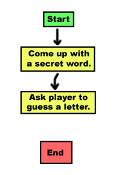
The game doesn't end after the player guesses a letter. The game should check if the letter is in the secret word or not. The letter either will be there or it won't be, so we should put two new boxes in:
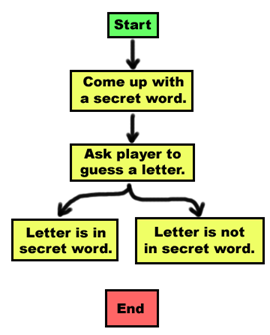
If the letter was in the secret word, we should also check if the player has won. And if the letter was not in the secret word, another body part gets added and the player might have lost. We can add boxes for those cases too. We don't need an arrow from the "Letter is in secret word." box to the "Player has run out of body parts and loses." box because if you think about it, you cannot possibly lose as long as you are guessing correct letters. Also, you cannot possibly win if you are guessing wrong letters. That is why we don't have those arrows. The flow chart now looks like:
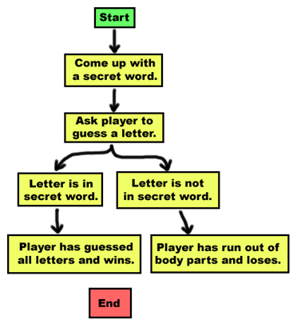
After the player has won or lost, we will ask the player if they want to play again with a new secret word. If the player doesn't want to play again, the program will terminate. Otherwise, we will think of a new secret word.
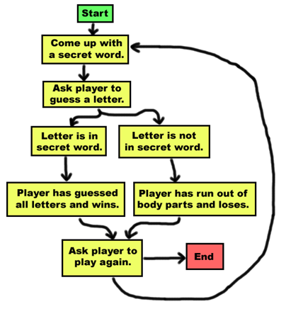
This flow chart looks like it is finished, but is there something we are forgetting? Oh yes! The player doesn't guess a letter just once. The player will have to keep guessing letters over and over until they win or lose. We should draw two new arrows so the flow chart shows this.
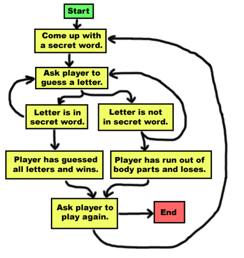
What else are we forgetting? What if when the player guesses a letter, they guess a letter they have guessed before. The player should not win or lose in this case, but should be allowed to guess a different letter instead:
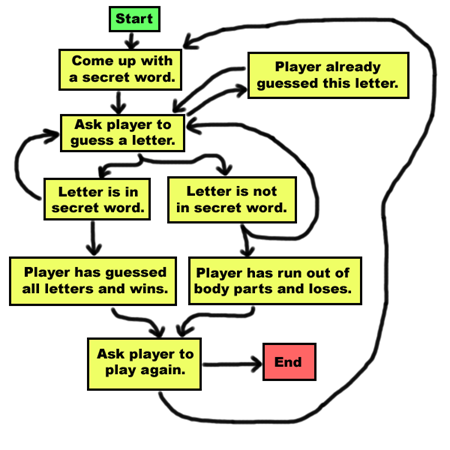
Wait a second. How can the player figure out how well or how bad they're doing in this game? We need to remember to show them the hangman board and also the secret word (with the unguessed letters blanked out). Then the player will be able to see how many body parts of the hangman there are, or how much of the secret word they have guessed so far. This should happen each time the player guesses. We can add this box in between the "Come up with a secret word." box and the "Ask player to guess a letter." box:
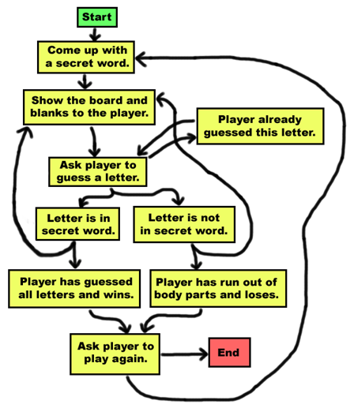
That looks good! We can always look at this flow chart while we are coding to remind ourselves of everything we want this program to do. The flow chart is kind of like a cake recipe or blueprints for a house. We could just start baking a cake or building a house, but without the plans we may forget to do a step. You won't really need this flow chart because you will just copy the source code given here. But when you design your own games, a flow chart can help you remember everything you need to code.
- import random
The Hangman program is going to randomly select a secret word from a list of secret words. This means we will need the random module imported.
- HANGMANPICS = ['''
- +------+
- | |
- | |
- |
- |
- |
- |
- |
- |
- |
- |
- ==============''', '''
...the rest of the code is too big to show here...
This "line" of code a simple variable assignment, but it actually stretches over several real lines in the source code. The actual "line" doesn't end until line 96. To help you understand what this code means, you should learn about multi-line strings and lists:
Ordinarily when you write strings in your source code, the string has to be on one line. However, if you use three single-quotes instead of one single-quote to begin and end the string, the string can be on several lines:
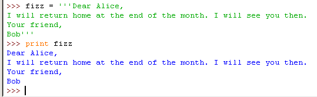
If we didn't have multi-line strings, we would have to use the \n escape character to represent the new lines. But that can make the string hard to read in the source code:
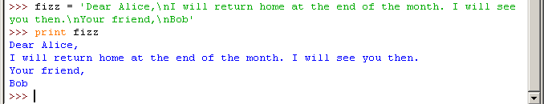
Multi-line strings do not have to keep the same indentation to remain in the same block. Within the multi-line string, Python ignores the indentation rules it normally has for the where blocks end.
def writeLetter():
# inside the def-block
print '''Dear Alice,
How are you? Write back to me soon.
Sincerely, Bob''' # end of the multi-line string and print statement
print 'P.S. I miss you.' # still inside the def-block
writeLetter() # This is the first line outside the def-block.
You may have noticed that HANGMANPICS's name is in all capitals. This is the programming convention for constant variables. Constants are variables whose values do not change throughout the program. Although we can change HANGMANPICS just like any other variable, the all-caps reminds the programmer to not write code that does so.
Constant variables are helpful for providing descriptions for values that have a special meaning. Since the multi-string value never changes, there is no reason we couldn't copy this multi-line string each time we needed that value. The HANGMANPICS variable never varies. But it is much shorter to type HANGMANPICS than it is to type that large multi-line string.
Also, there are cases where typing the value by itself may not be obvious. If we set a variable eggs = 72, we may forget why we were setting that variable to the integer 72. But if we define a constant variable DOZEN = 12, then we could set eggs = DOZEN * 6 and by just looking at the code know that the eggs variable was set to six dozen.
Like all conventions, we don't have to use constant variables, or even put the names of constant variables in all capitals. But doing it this way makes it easier for other programmers to understand how these variables are used. (It even can help you if you are looking at code you wrote a long time ago.)
I will now tell you about a new data type called a list. A list value can contain several other values in it. Try typing this into the shell: ['apples', 'oranges', 'HELLO WORLD']. This is a list value that contains three string values. Just like any other value, you can store this list in a variable. Try typing spam = ['apples', 'oranges', 'HELLO WORLD'], and then type spam to view the contents of spam.
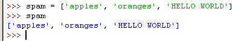
Lists are a good way to store several different values into one variable. The individual values inside of a list are also called items. Try typing: animals = ['aardvark', 'anteater', 'antelope', 'albert'] to store various strings into the variable animals. The square brackets can also be used to get an item from a list. Try typing animals[0], or animals[1], or animals[2], or animals[3] into the shell to see what they evaluate to.
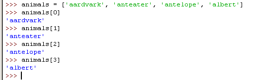
The number between the square brackets is the index. In Python, the first index is the number 0 instead of the number 1. So the first item in the list is at index 0, the second item is at index 1, the third item is at index 2, and so on. Lists are very good when we have to store lots and lots of values, but we don't want variables for each one. Otherwise we would have something like this:
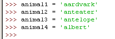
This makes working with all the strings as a group very hard, especially if you have hundreds or thousands (or even millions) of different strings that you want stored in a list. Using the square brackets, you can treat items in the list just like any other value. Try typing animals[0] + animals[2] into the shell:
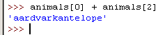
Because animals[0] evaluates to the string 'aardvark' and animals[2] evaluates to the string 'antelope', then the expression animals[0] + animals[2] is the same as 'aardvark' + 'antelope'. This string concatenation evaluates to 'aardvarkantelope'.
What happens if we enter an index that is larger than the list's largest index? Try typing animals[4] or animals[99] into the shell:
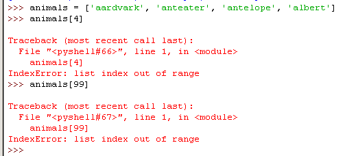
If you try accessing an index that is too large, you will get an index error.
You can also use the square brackets to change the value of an item in a list. Try typing animals[1] = 'ANTEATER', then type animals to view the list.
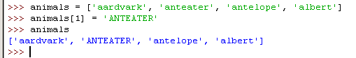
The second item in the animals list has been overwritten with a new string.
You can join lists together into one list with the + operator, just like you can join strings. When joining lists, this is known as list concatenation. Try typing [1, 2, 3, 4] + ['apples', 'oranges'] + ['Alice', 'Bob'] into the shell:
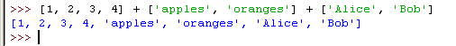
Notice that lists do not have to store values of the same data types. The example above has a list with both integers and strings in it.
The in operator makes it easy to see if a value is inside a list or not. Expressions that use the in operator return a boolean value: True if the value is in the list and False if the value is not in the list. Try typing 'antelope' in animals into the shell:
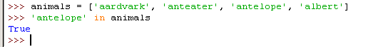
The expression 'antelope' in animals returns True because the string 'antelope' can be found in the list, animals. (It is located at index 2.)
But if we type the expression 'ant' in animals, this will return False because the string 'ant' does not exist in the list. We can try the expression 'ant' in ['beetle', 'wasp', 'ant'], and see that it will return True.
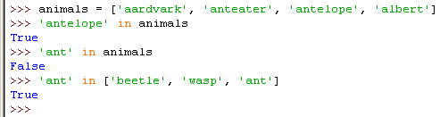
The in operator also works for strings as well as lists. You can check if one string exists in another the same way you can check if a value exists in a list. Try typing 'hello' in 'Alice said hello to Bob.' into the shell. This expression will evaluate to True.
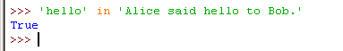
You can remove items from a list with a del statement. Try creating a list of numbers by typing: spam = [2, 4, 6, 8, 10] and then del spam[1]. Type spam to view the list's contents:
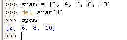
Notice that when you deleted the item at index 1, the item that used to be at index 2 became the new index 1. The item that used to be at index 3 moved to be the new index 2. Everything above the item that we deleted moved down one index. We can type del spam[1] again and again to keep deleting items from the list:
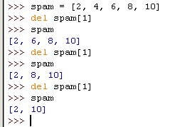
Lists are a data type that can contain other values as items in the list. But these items can also be other lists. Let's say you have a list of groceries, a list of chores, and a list of your favorite pies. You can put all three of these lists into another list. Try typing this into the shell:
groceries = ['eggs', 'milk', 'soup', 'apples', 'bread']
chores = ['clean', 'mow the lawn', 'go grocery shopping']
favoritePies = ['apple', 'frumbleberry']
listOfLists = [groceries, chores, favoritePies]
listOfLists
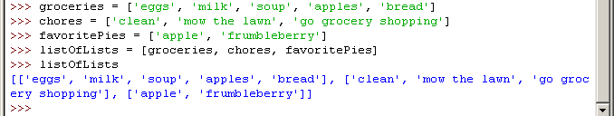
You could also type the following and get the same values for all four variables:
listOfLists = [['eggs', 'milk', 'soup', 'apples', 'bread'], ['clean', 'mow the lawn', 'go grocery shopping'], ['apple', 'frumbleberry']]
groceries = listOfLists[0]
chores = listOfLists[1]
favoritePies = listOfLists[2]
listOfLists
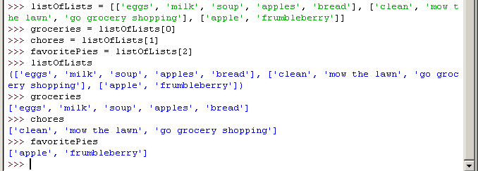
To get an item inside the list of lists, you would use two sets of square brackets like this: listOfLists[1][2] which would evaluate to the string 'go grocery shopping'. This is because listOfLists[1] evaluates to the list ['clean', 'mow the lawn', 'go grocery shopping'][2]. That finally evaluates to 'go grocery shopping'.
Here is another example of a list of lists, along with some of the indexes that point to the items in the list of lists named x. The red arrows point to indexes of the inner lists themselves. The image is also flipped on its side to make it easier to read:
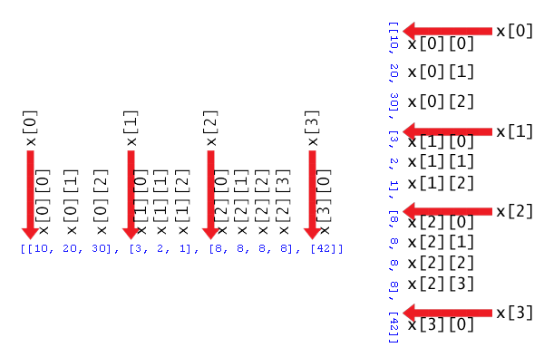
- HANGMANPICS = ['''
- +------+
- | |
- | |
- |
- |
- |
- |
- |
- |
- |
- |
- ==============''', '''
...the rest of the code is too big to show here...
If you look from line 3 to line 96 in the code, you will see that the value we are assigning to the variable HANGMANPICS is a list of multi-line strings. Each multi-line string in this list will be the picture (in ASCII art) of the hangman board. The string at HANGMANPICS[0] is the hangman's noose with no body parts. The string at HANGMANPICS[1] has just the head, HANGMANPICS[2] has the head and body, and so on.
- words = 'ant baboon badger bat bear beaver beetle bird camel cat clam cobra cougar coyote crab crane crow deer dog donkey duck eagle ferret fish fox frog goat goose hawk iguana jackal koala leech lemur lion lizard llama mite mole monkey moose moth mouse mule newt otter owl oyster panda parrot pigeon python quail rabbit ram rat raven rhino salmon seal shark sheep skunk sloth slug snail snake spider squid stork swan tick tiger toad trout turkey turtle wasp weasel whale wolf wombat worm zebra'.split()
Line 98 assigns a list to the variable words. This will be the list of all possible secret words in this game. The secret word will be selected from this list. All of the possible secret words are some kind of animal (so the player has some idea what the word is).
But the value being assigned to words doesn't look like a list. It does not have the [ and ] square brackets. But there is a special kind of function call at the end of the long string, .split(). This is a method on the string, and it will evaluate to a list which is then stored in words. Read on to find out what methods are.
Methods are functions that are attached with a certain value. For example, the strings have a lower() method. You cannot just call the lower() by itself. You must attach the method call to a specific string. Try typing 'Hello world!'.lower() into the interactive shell:
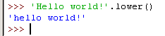
The lower() method returns the lowercase version of the string it is attached to. There is also an upper() method for strings. Try tying 'Hello world'.upper() into the shell:
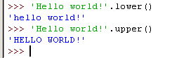
Because the upper() method returns a string, you can call a method on that string as well. Try typing 'Hello world!'.upper().lower() into the shell:
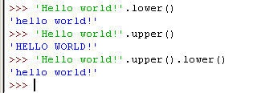
'Hello world!'.upper() evaluates to the string 'HELLO WORLD!', and then we call that string's lower() method. This returns the string 'hello world!', which is the final value in the evaluation. The order is important. 'Hello world!'.lower().upper() is not the same as 'Hello world!'.upper().lower():

Remember, if a string is stored in a variable, you can call a string method on that variable. Look at this example:
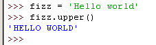
The list data type also has methods. The reverse() method will reverse the order of the items in the list. Try typing spam = [1, 2, 3, 4, 5, 6, 'meow', 'woof'] and then spam.reverse() (to reverse the list). Then type spam to view the contents of the spam variable.
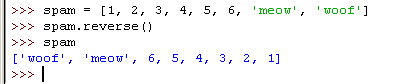
The most common list method you will use is append(). This method will add the value you pass as an argument to the end of the list. Try typing the following into the shell:
eggs = []
eggs.append('hovercraft')
eggs
eggs.append('eels')
eggs
eggs.append(42)
eggs
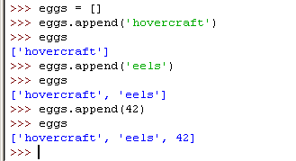
While strings and lists have methods, integers do not happen to have any methods.
You may be wondering why Python has methods anyway, since they do the same thing as functions. Attaching functions to values (which is what methods are) becomes a lot more useful in object-oriented programming (OOP). Strings and lists are also known as a special type of data type called objects. But object-oriented programming is a bit advanced for this book, and you don't need to know OOP to make these games. You only need to know about string methods and the append() list method.
- words = 'ant baboon badger bat bear beaver beetle bird camel cat clam cobra cougar coyote crab crane crow deer dog donkey duck eagle ferret fish fox frog goat goose hawk iguana jackal koala leech lemur lion lizard llama mite mole monkey moose moth mouse mule newt otter owl oyster panda parrot pigeon python quail rabbit ram rat raven rhino salmon seal shark sheep skunk sloth slug snail snake spider squid stork swan tick tiger toad trout turkey turtle wasp weasel whale wolf wombat worm zebra'.split()
As you can see, this line is just one very, very long string that has the split() method called on it. The split() method will return a list made up of the words in the string that are separated by a space. (The string is split up into a list of items.) The reason we do it this way instead of just writing out the list is that it is easier to type as one long string. Otherwise you would have to type: ['ant', 'baboon', 'badger',... with all the quotes and commas. The words list will contain the possible secret words that can show up in the game. You can add or remove your own words to this string later if you want to change the words used in the Hangman game.
For an example of how the split() string method works, try typing 'My very energetic mother just served us nine pies'.split() into the shell:
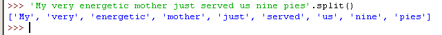
The result is a list of nine strings, one string for each of the words in the original string. The spaces are dropped from the items in the list.
- def getRandomWord(wordList):
- # This function returns a random string from the passed list of strings.
- wordIndex = random.randint(0, len(wordList) - 1)
- return wordList[wordIndex]
Starting on line 100, we define a new functon called getRandomWord() which has a single parameter named wordList. We will call this function when we want to pick a secret word from a list of secret words. This function makes use of a new Python function named len(), which I will explain first.
The len() function ("len" is short for "length") takes a list as a parameter and returns the integer of how many items are in a list. Try typing len(animals) into the shell:
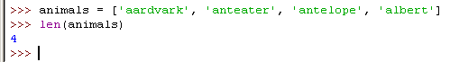
The integer value returned by len() is like any other integer value:
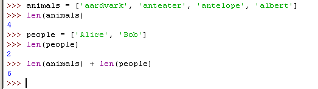
The square brackets by themselves is also a list value known as the empty list. If you pass the empty list to the len() function, it returns the integer 0, because there are zero items in that list:
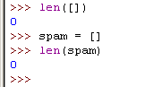
- def getRandomWord(wordList):
- # This function returns a random string from the passed list of strings.
- wordIndex = random.randint(0, len(wordList) - 1)
- return wordList[wordIndex]
The function getRandomWord() is passed a list of strings as the argument for the wordList parameter. On line 102, we will store a random index in this list in the wordIndex variable. We do this by calling randint() with two arguments. Remember that arguments in a function call are separated by commas, so the first argument is 0 and the second argument is len(wordList) - 1. The second argument is an expression that is first evaluated. len(wordList) will return the integer size of the list passed to getRandomWord(), minus one.
For example, if we passed ['apple', 'orange', grape'] as an argument to getRandomWord(), then len(wordList) would return the integer 3 and the expression 3 - 1 would evaluate to the integer 2.
That means that wordIndex would contain the return value of randint(0, 2), which means wordIndex would equal 0, 1, or 2. On line 103, we would return the element in wordList at the integer index stored in wordIndex.
Let's pretend we did send ['apple', 'orange', grape'] as the argument to getRandomWord() and that randint(0, 2) returned the integer 2. That would mean that line 103 would become return wordList[2], which would evaluate to return 'grape'. This is how the getRandomWord() returns a random string in the wordList list.
But remember, we can pass any list of strings to getRandomWord(). This function will be very useful to our Hangman game when we call it.
- def displayBoard(HANGMANPICS, missedLetters, correctLetters, secretWord):
- print HANGMANPICS[len(missedLetters)]
This code defines a new function named displayBoard(). This function has four parameters. This function will implement the code for the "Show the board and blanks to the player" box in our flow chart. Here is what each parameter means:
The first print statement will display the board. HANGMANPICS will be a list of strings for each possible board. HANGMANPICS[0] shows an empty gallows, HANGMANPICS[1] shows the head (this happens when the player misses one letter), HANGMANPICS[2] shows a head and body (this happens when the player misses two letters), and so on until HANGMANPICS[6] when the full hangman is shown and the player loses.
The number of letters in missedLetters will tell us how many missed guesses the player has made. We can call len(missedLetters) to find out this number. This number can also be used as the index to the HANGMANPICS list for the specific string we want to print. So, if missedLetters is 'aetr' then len('aetr') will return 4 and we will display the string HANGMANPICS[4]. This is what HANGMANPICS[len(missedLetters)] evaluates to. This line shows the correct hangman board to the player.
- print 'Missed letters:',
- for letter in missedLetters:
- print letter,
Line 110 is a new type of loop, called a for loop. They are kind of like while loops. Line 111 is the entire body of the for loop. The range() function is often used with for loops. I will explain both in the next two sections.
The range() function is easy. You can call it with either one or two integer arguments. When called with one argument, range() will return a list of integers from 0 up to (but not including) the argument. Try typing range(10) into the shell:
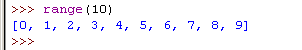
It's very easy to generate huge lists with the range() function. Try typing in range(10000) into the shell:
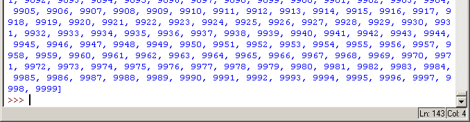
The list is so huge, that it won't even all fit onto the screen. But we can save the list into the variable just like any other list by typing spam = range(10000)
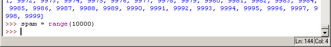
If you pass two arguments to range(), the list of integers it returns is from the first argument up to (but not including) the second argument. Try typing range(10, 20) into the shell:
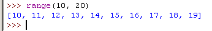
The range() is a very useful function, because we often use it in for loops (which are much like the while loops we have already seen).
The for loop is very good at looping over a list of values. This is different from the while loop, which loops as long as a certain condition is true. A for statement begins with the for keyword, followed by a variable, followed by the in keyword, followed by a sequence (such as a list or string) and then a colon. Each time the program execution goes through the loop (that is, on each iteration through the loop) the variable in the for statement takes on the value of the next item in the list.
For example, you just learned that the range() function will return a list of integers. We will use this list as the for statement's list. In the shell, type for i in range(10): and press Enter. Nothing will happen, but the shell will indent the cursor, because it is waiting for you to type in the for-block. Type print i and press Enter. Then, to tell the interactive shell you are done typing in the for-block, press Enter again to enter a blank line. The shell will then execute your for statement and block:
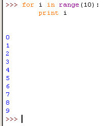
The for loop executes the code inside the for-block once for each item in the list. Each time it executes the code in the for-block, the variable i is assigned the next value of the next item in the list. If we used the for statement with the list [0, 1, 2, 3, 4, 5, 6, 7, 8, 9] instead of range(10), it would have been the same since the range() function's return value is the same as that list:

Try typing this into the shell: for thing in ['cats', 'pasta', 'programming', 'spam']: and press Enter, then type print 'I really like ' + thing and press Enter, and then press Enter again to tell the shell to end the for-block. The output should look like this:
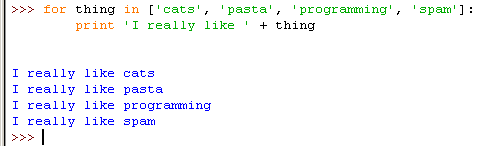
And remember, because strings are also a sequence data type just like lists, you can use them in for statements as well. This example uses a single character from the string on each iteration:
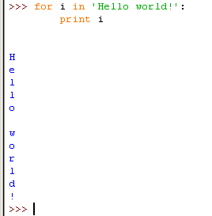
The for loop is very similar to the while loop, but when you only need to iterate over items in a list, using a for loop is much less code to type. You can make a while loop that acts the same way as a for loop by adding extra code:
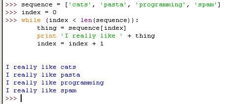
But using the for statement automatically does all this extra code for us and makes programming easier since we have less to type. Our Hangman game will use for loops so you can see how useful they are in real games.
One more thing about for loops, is that the for statement has the in keyword in it. But when you use the in keyword in a for statement, Python does not treat it like the in operator you would use in something like 42 in [0, 42, 67]. The "in" in for statements is just used to separate the variable and the list it gets its values from.
- print 'Missed letters:',
- for letter in missedLetters:
- print letter,
This for loop will display all the missed guesses that the player has made. When you play Hangman on paper, you usually write down these letters off to the side so you know not to guess them again. On each iteration of the loop the value of letter will be each letter in missedLetters. Remember that a comma at the end of the print statement will make it print a space instead of a "newline" character, so all the missed letters will be on the same line.
If missedLetters was 'ajtw' then this for loop would display a j t w.
So by this point we have shown the player the hangman board and the missed letters. Now we want to print the secret word, except we want blank lines for the letters. We can use the _ character (called the underscore character) for this. But we should print the letters in the secret word that the player has guessed, and use _ characters for the letters the player has not guessed yet. We can first create a string with nothing but underscores, one for each letter in the secret word. Then we can replace the blanks for each letter in correctLetters. So if the secret word was 'otter' then the blanked out string would be '_____' (that's five _ characters in a string). If correctLetters was the string 'rt' then we would want to change the blanked string to '_tt_r'. Here is the code that does that:
- blanks = '_' * len(word)
- for i in range(len(secretWord)): # replace blanks with correctly guessed letters
- if word[i] in correctLetters:
- blanks = blanks[:i] + word[i] + blanks[i+1:]
The blanks variable will be the string full of _ underscores. Line 116 uses string replication. Remember that the * operator can also be used on a string and an integer, so the expression 'hello' * 3 evaluates to 'hellohellohello'. This will make sure that blanks has the same number of underscores as secretWord has letters.
Then we use a for loop to go through each letter in secretWord, and replace the underscore with the actual letter if it exists in correctLetters. Line 120 looks odd, it seems that we are adding the values at certain indexes in the blanks and secretWord variables. But wait a second, blanks and secretWord are strings, not lists. And the len() function also only takes lists as parameters, not strings. But in Python, many of the things you can do to lists you can also do to strings:
Surprise! Strings act a lot like lists. In fact, almost all of the things you can do on lists you can also do on strings. Just think of strings as "lists" of one-letter strings. So 'Hello' acts similar to ['H', 'e', 'l', 'l', 'o']. (They are still different values and have different data types though.) The square brackets can also pick out individual characters from a string just like it can pick out individual items from a list. In the interactive shell, type fizz = 'Hello world!' and then fizz[0]:
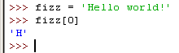
You can also find out how many characters are in a string with the len() function. Type in len(fizz) into the shell:
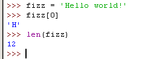
However, you cannot change a character in a string or remove a character with del statement. This is because a list is a mutable sequence and a string is an immutable sequence. "Mutable" is another word for "changeable." The word "immutable" means "cannot be changed." A "sequence" is a series of things (like in real life, a dance sequence is a series of different dance steps done one after another). The reason strings are immutable and lists are mutable has to do with how the Python interpreter is programmed, but it isn't important for us to know in order to make games. If we want to change a string, we can create a copy of the string with slices.
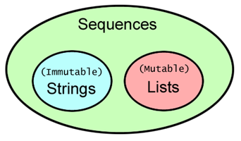
So remember, you can use index assignment or del with lists but not with strings.
Slicing is like indexing with multiple indexes instead of just one. Instead of putting one index in between the square brackets, we put two indexes separated by a colon. To grab the first three items from our animals list with animals[0:3], which means "all items in animals from item 0 up to (but not including) item 3."
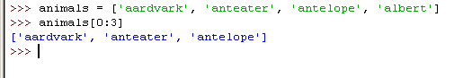
To grab items 2 and 3 from animals, use the slice animals[2:4]. Try typing it into the shell:
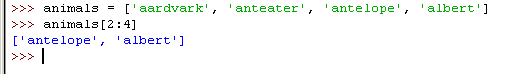
You can use slicing to get a part of a string (called a substring from a string. Try typing 'Hello world!'[3:8] into the shell:
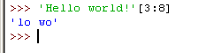
So remember that on the right side of any list or string value (or a variable that contains a list or string value), you can put square brackets to extract a single or several items from the sequence. ("Sequence" refers to a group of data types that include strings and lists.)
- for i in range(len(secretWord)): # replace blanks with correctly guessed letters
- if secretWord[i] in correctLetters:
- blanks = blanks[:i] + secretWord[i] + blanks[i+1:]
Let's pretend the value of secretWord is 'otter' and the value in correctLetters is 'tr'. Then len(secretWord) will return 5. Then range(len(secretWord)) becomes range(5), which in turn returns the list [0, 1, 2, 3, 4].
Because the value of i will take on each value in [0, 1, 2, 3, 4], then the for loop code is equivalent to this:
if secretWord[0] in correctLetters:
blanks = blanks[:0] + secretWord[0] + blanks[1:]
if secretWord[1] in correctLetters:
blanks = blanks[:1] + secretWord[1] + blanks[2:]
if secretWord[2] in correctLetters:
blanks = blanks[:2] + secretWord[2] + blanks[3:]
if secretWord[3] in correctLetters:
blanks = blanks[:3] + secretWord[3] + blanks[4:]
if secretWord[4] in correctLetters:
blanks = blanks[:4] + secretWord[4] + blanks[5:]
(By the way, writing out the code like this instead of using a loop is called loop unrolling.)
If you are confused as to what the value of something like secretWord[0] or blanks[3:] is, then look at this picture. It shows the value of the secretWord and blanks variables, and the index for each letter in the string.
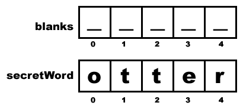
If we replace the list slices and the list indexes with the values that they represent, the unrolled loop code would be the same as this:
if 'o' in 'tr': # Condition is False, blanks == '_____'
blanks = '' + 'o' + '____' # This line is skipped.
if 't' in 'tr': # Condition is True, blanks == '_____'
blanks = '_' + 't' + '___' # This line is executed.
if 't' in 'tr': # Condition is True, blanks == '_t___'
blanks = '_t' + 't' + '__' # This line is executed.
if 'e' in 'tr': # Condition is False, blanks == '_tt__'
blanks = '_tt' + 'e' + '_' # This line is skipped.
if 'r' in 'tr': # Condition is True, blanks == '_tt__'
blanks = '_tt_' + 'r' + '' # This line is executed.
# blanks now has the value '_tt_r'
The above three boxes of code all do the same thing (at least, they do when secretWord is 'otter' and correctLetters is 'tr'. The first box is the actual code we have in our game. The second box shows code that does the same thing except without a for loop. The third box is the same as the second box, except we have evaluated many of the expressions in the second box.
The next few lines of code display the new value of blanks with spaces in between each letter.
- for letter in blanks: # show the secret word with spaces in between each letter
- print letter,
This for loop will print out each character in the string blanks. Remember that by now, blanks may have some of its underscores converted to the letters in secretWord. The comma at the end of the print statement causes it to display a space instead of a newline character.
This is the end of the displayBoard() function.
- def getGuess(alreadyGuessed):
- # Returns the letter the player entered. This function makes sure the player entered a single letter, and not something else.
The getGuess() function has a string called alreadyGuessed which contains the letters the player has already guessed, and will ask the player to guess a single letter. This single letter will be the return value for this function.
- while True:
- print 'Guess a letter.'
- guess = raw_input()
- guess = guess.lower()
We will use a while loop because we want to keep asking the player for a letter until they enter text that is a single letter they have not guessed previously. Notice that the condition for the while loop is simply the boolean value True. That means the only way execution will ever leave this loop is by executing a break statement (which leaves the loop) or a return statement (which leaves the entire function).
The code inside the loop asks the player to enter a letter, which is stored in the variable guess. If the player entered a capitalized letter, it will be converted to lowercase on line 129.
Take a look at the following code:
if catName == 'Fuzzball':
print 'Your cat is fuzzy.'
else:
print 'Your cat is not very fuzzy at all.'
This code seems rather simple. If the catName variable is equal to the string 'Fuzzball', then the if statement's condition is True and we tell the user that her cat is fuzzy. If catName is anything else, then we tell the user her cat is not fuzzy.
But what if we wanted something else besides "fuzzy" and "not fuzzy"? We could put another if and else statement inside the first else block like this:
if catName == 'Fuzzball':
print 'Your cat is fuzzy.'
else:
if catName == 'Spots'
print 'Your cat is spotted.'
else:
print 'Your cat is neither fuzzy nor spotted.'
But if we wanted more things, then the code starts to have a lot of indentation:
if catName == 'Fuzzball':
print 'Your cat is fuzzy.'
else:
if catName == 'Spots'
print 'Your cat is spotted.'
else:
if catName == 'FattyKitty'
print 'Your cat is fat.'
else:
if catName == 'Puff'
print 'Your cat is puffy.'
else:
print 'Your cat is neither fuzzy nor spotted nor fat nor puffy.'
Typing all those spaces means you have more chances of making a mistake with the indentation. So Python has the elif keyword. Using elif, the above code looks like this:
if catName == 'Fuzzball':
print 'Your cat is fuzzy.'
elif catName == 'Spots'
print 'Your cat is spotted.'
elif catName == 'FattyKitty'
print 'Your cat is fat.'
elif catName == 'Puff'
print 'Your cat is puffy.'
else:
print 'Your cat is neither fuzzy nor spotted nor fat nor puffy.'
If the condition for the if statement is False, then the program will check the condition for the first elif statement (which is catName == 'Spots'. If that condition is False, then the program will check the condition of the next elif statement. If ALL of the conditions for the if and elif statements are False, then the code in the else block executes.
But if one of the elif conditions are True, the elif-block code is executed and then execution jumps down to the first line past the else-block. So only one of the blocks in this if-elif-else statement will be executed. You can also leave off the else-block if you don't need one, and just have an if-elif statement.
- if len(guess) != 1:
- print 'Please enter a single letter.'
- elif guess in alreadyGuessed:
- print 'You have already guessed that letter. Choose again.'
- elif guess not in 'abcdefghijklmnopqrstuvwxyz':
- print 'Please enter a LETTER.'
- else:
- return guess
The guess variable contains the text the player typed in for their guess. We need to make sure they typed in a single lowercase letter. If they didn't, we should loop back and ask them again. The if statement's condition checks that the text is one and only letter. If it is not, then we execute the if-block code, and then execution jumps down past the else-block. But since there is no more code after this if-elif-else statement, execution loops back to line 126.
If the condition for the if statement is False, we check the elif statement's condition on line 132. This condition is True if the letter exists inside the alreadyGuessed variable (remember, this is a string that has every letter the player has already guessed). If this condition is True, then we display the error message to the player, and jump down past the else-block. But then we would be at the end of the while-block, so execution jumps back up to line 126.
If the condition for the if statement and the elif statement are both False, then we check the second elif statement's condition on line 134. If the player typed in a number or a funny character (making guess have a value like '5' or '!'), then guess would not exist in the string 'abcdefghijklmnopqrstuvwxyz'. If this is the case, the elif statement's condition is True
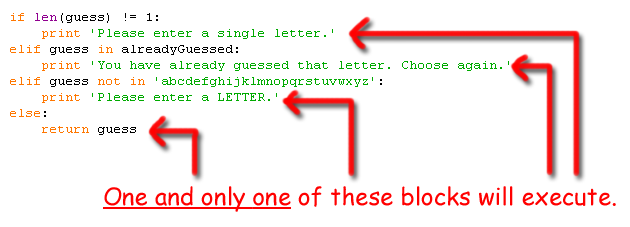
Unless these three conditions are all False, the player will keep looping and keep being asked for a letter. But when all three of the conditions are False, then the else-block's return statement will run and we will exit this loop and function.
- def playAgain():
- # This function returns True if the player wants to play again, otherwise it returns False.
- print 'Do you want to play again? (yes or no)'
- return raw_input().lower().startswith('y')
The playAgain() function has just a print statement and a return statement. The return statement has an expression that looks complicated, but we can break it down. Once we evaluate this expression to a value, that value will be returned from this function.
The expression on line 142 doesn't have any operators, but it does have a function call and two method calls. The function call is raw_input() and the method calls are lower() and startswith('y'). Remember that method calls are function calls that are attached by a period to the value on their left. lower() is attached to the return value of raw_input().
raw_input() returns a string of the text that the user typed in. Here's a step by step look at how Python evaluates this expression if the user types in YES.
return raw_input().lower().startswith('y')
return 'YES'.lower().startswith('y')
return 'yes'.startswith('y')
return True
The point of the playAgain() function is to let the player type in yes or no to tell our program if they want to play another round of Hangman. If the player types in YES, then the return value of raw_input() is the string 'YES'. 'YES'.lower() returns the lowercase version of the attached string. So the return value of 'YES'.lower() is 'yes'.
But there's the second method call, startswith('y'). This function returns True if the associated string begins with the string parameter between the parentheses, and False if it doesn't. The return value of 'yes'.startswith('y') is True.
Now we have evaluated this expression! We can see that what this does is let the player type in a response, we lowercase the response, check if it begins with the letter 'y' or 'Y', and then return True if it does and False if it doesn't. Whew!
On a side note, there is also a endswith(someString) string method that will return True if the string ends with the string in someString and False if it doesn't.
That's all the functions we are creating for this game! getRandomWord(wordList) will take a list of strings passed to it as a parameter, and return one string from it. That is how we will choose a word for the player to guess.
displayBoard(HANGMANPICS, missedLetters, correctLetters, secretWord) will show the current state of the board, including how much of the secret word the player has guessed so far and the wrong letters the player has guessed. This function needs four parameters passed to work correctly. HANGMANPICS is a list of strings that hold the ASCII art for each possible hangman board. correctLetters and missedLetters are strings made up of the letters that the player has guessed that are in and not in the secret word. And secretWord is the secret word the player is trying to guess. This function has no return value.
getGuess(alreadyGuessed) takes a string of letters the player has already guessed and will keep asking the player for a letter that is a letter that he hasn't already guessed. (That is, a letter that is not in alreadyGuessed. This function returns the string of the acceptable letter the player guessed.
playAgain() is a function that asks if the player wants to play another round of Hangman. This function returns True if the player does and False if the player doesn't.
We'll now start the code for the main part of the game, which will call the above functions as needed. Look back at our flow chart.
We need to write code that does everything in this flow chart, and does it in order. The main part of the code starts at line 145:
- print 'H A N G M A N'
- missedLetters = ''
- correctLetters = ''
- secretWord = getRandomWord(words)
- gameIsDone = False
Line 145 is the first actual line that executes in our game. Everything previous was just function definitions and a very large variable assignment for HANGMANPICS. We start by assigning a blank string for missedLetters and correctLetters, because the player has not guessed any missed or correct letters yet. Then we call getRandomWord(words), where words is a variable with the huge list of possible secret words we assigned on line 98. The return value of getRandomWord(words) is one of these words, and we save it to the secretWord variable. Then we also set a variable named gameIsDone to False. We will set gameIsDone to True when we want to signal that the game is over and the program should ask the player if they want to play again.
Setting the values of these variables is what we do before the player starts guessing letters.
- while True:
- displayBoard(HANGMANPICS, missedLetters, correctLetters, secretWord)
The while loop's condition is always True, which means we will always loop forever until a break statement is encountered. We will execute a break statement when the game is over (either because the player won or the player lost).
Line 152 calls our displayBoard() function, passing it the list of hangman ASCII art pictures and the three variables we set on lines 146, 147, and 148. Program execution moves to the start of displayBoard() at line 105. Based on how many letters the player has correctly guessed and missed, this function displays the appropriate hangman board to the player.
- # Let the player type in a letter.
- guess = getGuess(missedLetters + correctLetters)
If you look at our flow chart, you see only one arrow going from the "Show the board and the blanks to the player." box to the "Ask a player to guess a letter." box. Since we have already written a function to get the guess from the player, let's call that function. Remember that the function needs all the letters in missedLetters and correctLetters combined, so we will pass as an argument a string that is a concatenation of both of those strings. This argument is needed by getGuess() because the function has code to check if the player types in a letter that they have already guessed.
- if guess in secretWord:
- correctLetters = correctLetters + guess
Now let's see if the single letter in the guess string exists in secretWord. If it does exist, then we should concatenate the letter in guess to the correctLetters string. Next we can check if we have guessed all of the letters and won.
- # Check if the player has won
- foundAllLetters = True
- for i in range(len(secretWord)):
- if secretWord[i] not in correctLetters:
- foundAllLetters = False
- break
How do we know if the player has guessed every single letter in the secret word? Well, correctLetters has each letter that the player correctly guessed and secretWord is the secret word itself. We can't just check if correctLetters == secretWord because consider this situation: if secretWord was the string 'otter' and correctLetters was the string 'orte', then correctLetters == secretWord would be False even though the player has guessed each letter in the secret word.
The player simply guessed the letters out of order and they still win, but our program would incorrectly think the player hasn't won yet. Even if they did guess the letters in order, correctLetters would be the string 'oter' because the player can't guess the letter t more than once. The expression 'otter' == 'oter' would evaluate to False even though the player won.
The only way we can be sure the player won is to go through each letter in secretWord and see if it exists in correctLetters. If, and only if, every single letter in secretWord exists in correctLetters will the player have won.
Note that this is different than checking if every letter in correctLetters is in secretWord. If correctLetters was the string 'ot' and secretWord was 'otter', it would be true that every letter in 'ot' is in 'otter', but that doesn't mean the player has guessed the secret word and won.
So how can we do this? We can loop through each letter in secretWord and if we find a letter that does not exist in correctLetters, we know that the player has not guessed all the letters. This is why we create a new variable named foundAllLetters and set it to the boolean value True. We start out assuming that we have found all the letters, but will change foundAllLetters to False when we find a letter in secretWord that is not in correctLetters.
The for loop will go through the numbers 0 up to (but not including) the length of the word. Remember that range(5) will evaluate to the list [0, 1, 2, 3, 4, 5]. So on line 162, the program executes all the code inside the for-block with the variable i will be set to 0, then 1, then 2, then 3, then 4, then 5.
We use range(len(secretWord)) so that i can be used to access each letter in the secret word. So if the first letter in secretWord (which is located at secretWord[0]) is not in correctLetters, we know we can set foundAllLetters to False. Also, because we don't have to check the rest of the letters in secretWord, we can just break out of this loop. Otherwise, we loop back to line 163 and check the next letter.
If foundAllLetters manages to survive every single letter without being turned to False, then it will keep the original True value we gave it. Either way, the value in foundAllLetters is accurate by the time we get past this for loop and run line 166.
- if foundAllLetters:
- print 'Yes! The secret word is "' + secretWord + '"! You have won!'
- gameIsDone = True
This is a simple check to see if we found all the letters. If we have found every letter in the secret word, we should tell the player that they have won. We will also set the gameIsDone variable to True. We will check this variable to see if we should let the player guess again or if the player is done guessing.
- else:
This is the start of the else-block. Remember, the code in this block will execute if the condition was False. But which condition? To find out, point your finger at the start of the else keyword and move it straight up. You will see that the else keyword's indentation is the same as the if keyword's indentation on line 157. So if the condition on line 157 was False, then we will run the code in this else-block. Otherwise, we skip down past the else-block to line 177.
- missedLetters = missedLetters + guess
Because the player's guessed letter was wrong, we will add it to the missedLetters string. This is like what we did on line 158 when the player guessed correctly.
- # Check if player has guessed too many times and lost
- if len(missedLetters) == len(HANGMANPICS) - 1:
- displayBoard(HANGMANPICS, missedLetters, correctLetters, secretWord)
- print 'You have run out of guesses!\nAfter ' + str(len(missedLetters)) + ' missed guesses and ' + str(len(correctLetters)) + ' correct guesses, the word was "' + secretWord + '"'
- gameIsDone = True
Think about how we know when the player has guessed too many times. When you play Hangman on paper, this is when the drawing of the hangman is finished. We draw the hangman on the screen with print statements, based on how many letters are in missedLetters. Remember that each time the player guesses wrong, we add (or as a programmer would say, concatenate) the wrong letter to the string in missedLetters. So the length of missedLetters (or, in code, len(missedLetters)) can tell us the number of wrong guesses.
At what point does the player run out of guesses and lose? Well, the HANGMANPICS list has 7 pictures (really, they are ASCII art strings). So when len(missedLetters) equals 6, we know the player has lost because the hangman picture will be finished. (Remember that HANGMANPICS[0] is the first item in the list, and HANGMANPICS[6] is the last one. This is because the index of a list with 7 items goes from 0 to 6, not 1 to 7.)
So why do we have len(missedLetters) == len(HANGMANPICS) - 1 as the condition on line 173, instead of len(missedLetters) == 6? Pretend that we add another string to the HANGMANPICS list (maybe a picture of the full hangman with a tail, or a third mutant arm). Then the last picture in the list would be at HANGMANPICS[7]. So not only would we have to change the HANGMANPICS list with a new string, but we would also have to remember to change line 173 to len(missedLetters) == 7. This might not be a big deal for a
program like Hangman, but when you start writing larger programs you may have to change several different lines of code all over your program just to make a
change in the program's behavior. This way, if we want to make the game harder or easier, we just have to add or remove ASCII art strings to HANGMANPICS and change nothing else.
A second reason we user len(HANGMANPICS) - 1 is so that when we read the code in this program later, we know why this program behaves the way it does. If you wrote len(missedLetters) == 6 and then looked at the code two weeks later, you may wonder what is so special about the number 6. You may have forgotten that 6 is the last index in the HANGMANPICS list. Of course, you could write a comment to remind yourself, like:
- if len(missedLetters) == 6: # 6 is the last index in the HANGMANPICS list
But it is easier to just use len(HANGMANPICS) - 1 instead.
So, when the length of the missedLetters string is equal to len(HANGMANPICS) - 1, we know the player has run out of guesses and has lost the game. We print a long string telling the user what the secret word was, and then set the gameIsDone value to the boolean value True. This is how we will tell ourselves that the game is done and we should start over.
Remember that when we have \n in a string, that represents the newline character.
- # Ask the player if they want to play again (but only if the game is done).
- if gameIsDone:
- if playAgain():
- missedLetters = ''
- correctLetters = ''
- gameIsDone = False
- secretWord = getRandomWord(words)
If the player won or lost after guessing their letter, then our code would have set the gameIsDone variable to True. If this is the case, we should ask the player if they want to play again. We already wrote the playAgain() function to handle getting a yes or no from the player. This function returns a boolean value of True if the player wants to play another game of Hangman, and False if they've had enough.
If the player does want to play again, we will reset the values in missedLetters and correctLetters to blank strings, set gameIsDone to False, and then choose a new secret word by calling getRandomWord() again, passing it the list of possible secret words.
This way, when we loop back to the beginning of the loop (on line 151) the board will be back to the start (remember we decide which hangman picture to show based on the length of missedLetters, which we just set as the blank string) and the game will be just as the first time we entered the loop. The only difference is we will have a new secret word, because we programmed getRandomWord() to return a randomly chosen word each time we call it.
There is a small chance that the new secret word will be the same as the old secret word, but this is just a coincidence. Let's say you flipped a coin and it came up heads, and then you flipped the coin again and it also came up heads. Both coin flips were random, it was just a coincidence that they came up the same both times. Accordingly, you may get the same word return from getRandomWord() twice in a row, but this is just a coincidence.
- else:
- break
If the player typed in 'no' when asked if they wanted to play again, then they return value of the call to the playAgain() function would be False and the else-block would have executed. This else-block only has one line, a break statement. This causes the execution to jump to the end of the loop that was started on line 151. But because there is no more code after the loop, the program terminates.
This program was much bigger than the Dragon World program, but this program is also more sophisticated. It really helps to make a flow chart or small sketch to remember how you want everything to work. Take a look at the flow chart and try to find the lines of code that represent each block.
At this point, you can move on to the next chapter. But I suggest you keep reading on to find out about some ways we can improve our Hangman game.
After you have played Hangman a few times, you might think that six guesses aren't enough to get many of the words. We can easily give the player more guesses by adding more multi-line strings to the HANGMANPICS list. It's easy, just change the ] square bracket on line 96 to a ,''' comma and three quotes (see line 96 below). Then add the following:
- ==============''', '''
- +------+
- | |
- | |
- [O |
- /|\ |
- / | \ |
- | |
- / \ |
- / \ |
- |
- |
- ==============''', '''
- +------+
- | |
- | |
- [O] |
- /|\ |
- / | \ |
- | |
- / \ |
- / \ |
- |
- |
- ==============''']
We have added two new multi-line strings to the HANGMANPICS list, one with the hangman's left ear drawn, and the other with both ears drawn. Because our program will tell the player they have lost when the number of guesses is the same as the number of strings in HANGMANPICS (minus one), this is the only change we need to make.
We can also change the list of words by changing the words on line 98. Instead of animals, we could have colors, shapes, or fruits:
- words = 'red orange yellow green blue indigo violet white black brown'.split()
- words = 'square triangle rectangle circle ellipse rhombus trapazoid chevron pentagon hexagon septagon octogon'.split()
- words = 'apple orange lemon lime pear watermelon grape grapefruit cherry banana cantalope mango strawberry tomato'.split()
With some modification, we can change our code so that our Hangman game can use all of these words as separate sets. We can tell the player which set the secret word is from (like "animal", "color", "shape", or "fruit"). This way, the player isn't guessing animals all the time.
To make this change, we will introduce a new data type called a dictionary. A dictionary is a collection of other values much like a list, but instead of accessing the items in the dictionary with an integer index, you access them with an index of any data type (but most often strings).
Try typing the following into the shell:
stuff = {'hello':'Hello there, how are you?', 'chat':'How is the weather?', 'goodbye':'It was nice talking to you!'}
Those are curly braces { and }. On the keyboard they are on the same key as the square braces [ and ]. We use curly braces to type out a dictionary value in Python. The values in between them are key-value pairs. The keys are the things on the left of the colon and the values are on the right of the colon. You can access the values (which are like items in lists) in the dictionary by using the key (which are like indexes in lists). Try typing into the shell stuff['hello'] and stuff['chat'] and stuff['goodbye']:

You see, instead of putting an integer index in between the square brackets, you put a key string index. This will evaluate to the value for that key. You can get the size (that is, how many key-value pairs in the dictionary) with the len() function. Try typing len(stuff) into the shell:

The list version of this dictionary would have only the values, and look something like this:
listStuff = ['Hello there, how are you?', 'How is the weather?', 'It was nice talking to you!']
The list doesn't have any keys, like 'hello' and 'chat' and 'goodbye' in the dictionary. We have to use integer indexes 0, 1, and 2.
Dictionaries are different from lists because they are unordered. The first item in a list named listStuff would be listStuff[0]. But there is no "first" item in a dictionary, because dictionaries do not have any sort of order. Try typing this into the shell:
favorites1 = {'fruit':'apples', 'animal':'cats', 'number':42}
favorites2 = {'animal':'cats', 'number':42, 'fruit':'apples'}
favorites1 == favorites2
As you can see, the expression favorites1 == favorites2 evaluates to True because dictionaries are unordered, and they are considered to be the same if they have the same key-value pairs in them. Lists are ordered, so a list with the same values in them but in a different order are not the same. Try typing this into the shell:
listFavs1 = ['apples', 'cats', 42]
listFavs2 = ['cats', 42, 'apples']
listFavs1 == listFavs2
As you can see, the two lists listFavs1 and listFavs2 are not considered to be the same because order matters in lists.
You can also use integers as the keys for dictionaries. Dictionaries can have keys of any data type, not just strings. But remember, because 0 and '0' are different values, they will be different keys. Try typing this into the shell:
myDict = {'0':'a string', 0:'an integer'}
myDict[0]
myDict['0']
You might think that using a for loop is hard with dictionaries because they do not have integer indexes. But actually, it's easy. Try typing the following into the shell. (Here's a hint, in IDLE, you do not have to type spaces to start a new block. IDLE does it for you. To end the block, just insert a blank line by just hitting the Enter key. Or you could start a new file, type in this code, and then press F5 to run the program.)
favorites = {'fruit':'apples', 'animal':'cats', 'number':42}
for i in favorites:
print i
for i in favorites:
print favorites[i]
As you can see, if you just use a dictionary in a for loop, the variable i will take on the values of the dictionary's keys, not it's values. But if you have the dictionary and the key, you can get the value as we do above with favorites[i]. But remember that because dictionaries are unordered, you cannot predict which order the for loop will execute in. Above, we typed the 'animal' key as coming before the 'number' key, but the for loop printed out 'number' before 'animal'.
Dictionaries also have two useful methods, keys() and values(). These will return (ordered) lists of the key values and the value values, respectively. Try typing the following into the shell:
favorites = {'fruit':'apples', 'animal':'cats', 'number':42}
favorites.keys() favorites.values()
Using these methods to get a list of the keys and values that are in a dictionary can be very helpful.
So how can we use dictionaries in our game? First, let's change the list words into a dictionary whose keys are strings and values are lists of strings. (Remember that the string method split() evaluates to a list.
- words = {'Colors':'red orange yellow green blue indigo violet white black brown'.split(),
- 'Shapes':'square triangle rectangle circle ellipse rhombus trapazoid chevron pentagon hexagon septagon octogon'.split(),
- 'Fruits':'apple orange lemon lime pear watermelon grape grapefruit cherry banana cantalope mango strawberry tomato'.split(),
- 'Animals':'bat bear beaver cat cougar crab deer dog donkey duck eagle fish frog goat leech lion lizard monkey moose mouse otter owl panda python rabbit rat shark sheep skunk squid tiger turkey turtle weasel whale wolf wombat zebra'.split()}
This code is put across multiple lines in the file, even though the Python interpreter thinks of it as just one "line of code." (The line of code doesn't end until the final } curly brace.)
Now we will have to change our getRandomWord() function so that it chooses a random word from a dictionary of lists of strings, instead of from a list of strings. Here is what the function originally looked like:
- def getRandomWord(wordList):
- # This function returns a random string from the passed list of strings.
- wordIndex = random.randint(0, len(wordList) - 1)
- return wordList[wordIndex]
Change the code in this function so that it looks like this:
- def getRandomWord(wordDict):
- # This function returns a random string from the passed dictionary of lists of strings, and the key also.
- # First, randomly select a key from the dictionary:
- wordKey = random.choice(wordDict.keys())
- # Second, randomly select a word from the key's list in the dictionary:
- wordIndex = random.randint(0, len(wordDict[wordKey]) - 1)
- return [wordDict[wordKey][wordIndex], wordKey]
Line 100 just changes the name of the parameter to something a little more descriptive. Now instead of choosing a random word from a list of strings, first we choose a random key from the dictionary and then we choose a random word from the key's list of strings. Line 104 calls a new function in the random module named choice(). The choice() function has one parameter, a list. The return value of choice() is an item randomly selected from this list each time it is called.
Remember that randint(a, b) will return a random integer between (and including) the two integers a and b and choice(a) returns a random item from the list a. Look at these two lines of code, and figure out why they do the exact same thing:
random.randint(0, 9)
random.choice(range(0, 10))
Line 103 (line 109 in the new code) has also been changed. Now instead of returning the string wordList[wordIndex], we are returning a list with two items. The first item is wordDict[wordKey][wordIndex]. The second item is wordKey. We return a list because we actually want the getRandomWord() to return two values, so putting those two values in a list and returning the list is the easiest way to do this.
wordDict[wordKey][wordIndex] may look kind of complicated, but it is just an expression you can evaluate one step at a time like anything else. First, imagine that wordKey had the value 'Fruits' (which was chosen on line 104) and wordIndex has the value 5 (chosen on line 107). Here is how wordDict[wordKey][wordIndex] would evaluate:
wordDict[wordKey][wordIndex]
wordDict['Fruits'][5]
['apple', 'orange', 'lemon', 'lime', 'pear', 'watermelon', 'grape', 'grapefruit', 'cherry', 'banana', 'cantalope', 'mango', 'strawberry', 'tomato'][5]
'watermelon'
In the above case, the first item in the list this function returns would be the string 'watermelon'.
There are just three more changes to make to our program. The first two are on the lines that we call the getRandomWord() function. The function is called on lines 148 and 184 in the original program:
...
- correctLetters = ''
- secretWord = getRandomWord(words)
- gameIsDone = False
- gameIsDone = False
- secretWord = getRandomWord(words)
- else:
Because the getRandomWord() function now returns a list of two items instead of a string, secretWord will be assigned a list, not a string. We would then have to change the code as follows:
...
- correctLetters = ''
- secretWord = getRandomWord(words)
- secretKey = secretWord[1]
- secretWord = secretWord[0]
- gameIsDone = False
- gameIsDone = False
- secretWord = getRandomWord(words)
- secretKey = secretWord[1]
- secretWord = secretWord[0]
- else:
With the above changes, secretWord is first a list of two items. Then we add a new variable named secretKey and set it to the second item in secretWord. Then we set secretWord itself to the first item in the secretWord list. That means that secretWord will then be a string.
But there is an easier way by doing a little trick with assignment statements. Try typing the following into the shell:
a, b, c = ['apples', 'cats', 42]
a
b
c
The trick is to put the same number of variables (delimited by commas) on the left side of the = sign as are in the list on the right side of the = sign. Python will automatically assign the first item's value in the list to the first variable, the second item's value to the second variable, and so on. But if you do not have the same number of variables on the left side as there are items in the list on the right side, the Python interpreter will give you an error.
So we should change our code in Hangman to use this trick, which will mean our program uses fewer lines of code.
...
- correctLetters = ''
- secretWord, secretKey = getRandomWord(words)
- gameIsDone = False
- gameIsDone = False
- secretWord, secretKey = getRandomWord(words)
- else:
The last change we will make is to add a simple print statement to tell the player which set of words they are trying to guess. This way, when the player plays the game they will know if the secret word is an animal, color, shape, or fruit. Add this line of code after line 151. Here is the original code:
- while True:
- displayBoard(HANGMANPICS, missedLetters, correctLetters, secretWord)
Add the line so your program looks like this:
- while True:
- print 'The secret word is in the set: ' + secretKey
- displayBoard(HANGMANPICS, missedLetters, correctLetters, secretWord)
Now we are done with our changes. Instead of just a single list of words, the secret word will be chosen from many different lists of words. We will also tell the player which set of words the secret word is from. Try playing this new version. You can easily change the words dictionary on line 98 to include more sets of words.
We're done with Hangman. Let's move on to our next game, Tic Tac Toe!
Things Covered In This Chapter:
- Designing our game by drawing a flow chart before programming.
- ASCII Art
- Multi-line Strings
- Lists
- List indexes
- Index assignment
- List concatenation
- The in operator
- The del operator
- Methods
- The append() list method
- The lower() and upper() string methods
- The reverse() list method
- The split() list method
- The len() function
- Empty lists
- The range() function
- for loops
- Strings act like lists
- Mutable sequences (lists) and immutable sequences (strings)
- List slicing and substrings
- elif statements
- The startswith(someString) and endswith(someString) string methods
- The dictionary data type (which is unordered, unlike list data type which is ordered)
- key-value pairs
- The keys() and values() dictionary methods
- Multiple variable assignment, such as a, b, c = [1, 2, 3]